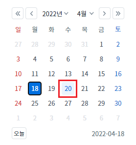
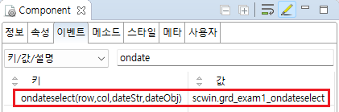

[GridView] Event - ondateselect (inputType이 calendar이고, 사용자가 달력 UI에서 '일'(day)를 선택했을 때 발생)
1개요
GridView의 'ondateselect' 이벤트를 설정한 예제입니다. 이 이벤트는 컬럼의 inputType이 'calendar'로 설정되고, 사용자가 달력 UI에서 '일'(day)를 선택했을 때 발생합니다. 이벤트 핸들러에서 아래의 값을 확인할 수 있습니다. - 수정되고 있는 셀의 행 번호 - 수정되고 있는 셀의 열 번호 - 선택한 날짜의 문자열 - 선택한 날짜의 Date 객체
2구현된 기능
'ondateselect' 이벤트 발생 시 로그 출력하기
3예제 테스트 방법
3.1'ondateselect' 이벤트 발생 시 로그 출력하기
1
STEP 1: 'Date' 컬럼의 셀을 편집 모드로 전환합니다.
두 번째 행의 'Date' 컬럼의 셀을 클릭합니다.
셀이 편집 모드로 전환됩니다.
Image 1.브라우저(Chrome) 실행 예시

2
STEP 2: 달력 UI에서 '일'(day)을 선택합니다.
편집 모드에서 아이콘 '달력'을 클릭합니다. 달력 UI가 표시됩니다.
Image 2.브라우저(Chrome) 실행 예시 - 달력 UI 표시

달력 UI에서 '20'일을 선택합니다.
Image 3.브라우저(Chrome) 실행 예시 - 날짜 선택

3
STEP 3: 실행 결과를 확인합니다.
ondateselect 이벤트가 발생되고 이벤트 핸들러가 실행되어 로그가 출력됩니다. 셀의 값이 '20220420'으로 변경됩니다. 예제 영역 '로그 확인' 또는 브라우저의 개발자 도구의 콘솔(console)탭에 출력된 로그를 확인합니다.
Example 1.Log
[08:11:13] ** scwin.grd_exam1_ondateselect ** row index : 1 column index : 0 selected date : 20220420
4구현 예시
4.1'ondateselect' 이벤트의 핸들러 설정하기
1
STEP 1: GridView 바디 컬럼의 속성을 정의합니다.
[필수] inputType="calendar"
[필수] dataType="date"
[선택] displayFormat="yyyy-MM-dd"
Image 4.웹스퀘어 스튜디오의 Component View - 바디 컬럼 속성 설정 예시

Example 2.Source
<!-- gridView 의 소스 본문 예시 --> <w2:gridView id="grd_exam1"> <!-- 중략 --> <w2:gBody id="gBody1"> <w2:row id="row2"> <w2:column inputType="calendar" dataType="date" id="col_date" displayFormat="yyyy-MM-dd"></w2:column> <!-- 중략 --> </w2:row> </w2:gBody> </w2:gridView>
2
STEP 2: GridView의 'ondateselect' 이벤트 핸들러를 설정합니다.
예제 파일에서는 핸들러로 사용할 메소드명을 'scwin.grd_exam1_ondateselect'로 설정하였습니다.
Image 5.웹스퀘어 스튜디오의 Component View - 이벤트 설정 예시

Example 3.Source
<!-- gridView 의 소스 본문 예시 --> <w2:gridView ev:ondateselect="scwin.grd_exam1_ondateselect" id="grd_exam1"> <!-- 중략 --> </w2:gridView>
STEP 3: 'scwin.grd_exam1_ondateselect' 메소드를 정의합니다.
Example 4.Script
//GridView grd_exam1의 ondateselect 이벤트 핸들러 scwin.grd_exam1_ondateselect = function (row, col, dateStr, dateObj) { //row : 수정되고 있는 셀의 행 번호 //col : 수정되고 있는 셀의 열 번호 //dateStr : 선택한 날짜의 문자열 //dateObj : 선택한 날짜의 Date 객체 -> 개발자 도구 console에서 확인합니다. //console에 log 출력 console.log(row, col, dateStr, dateObj); };
5주요 API
ondateselect
[body column] inputType
[body column] dataType